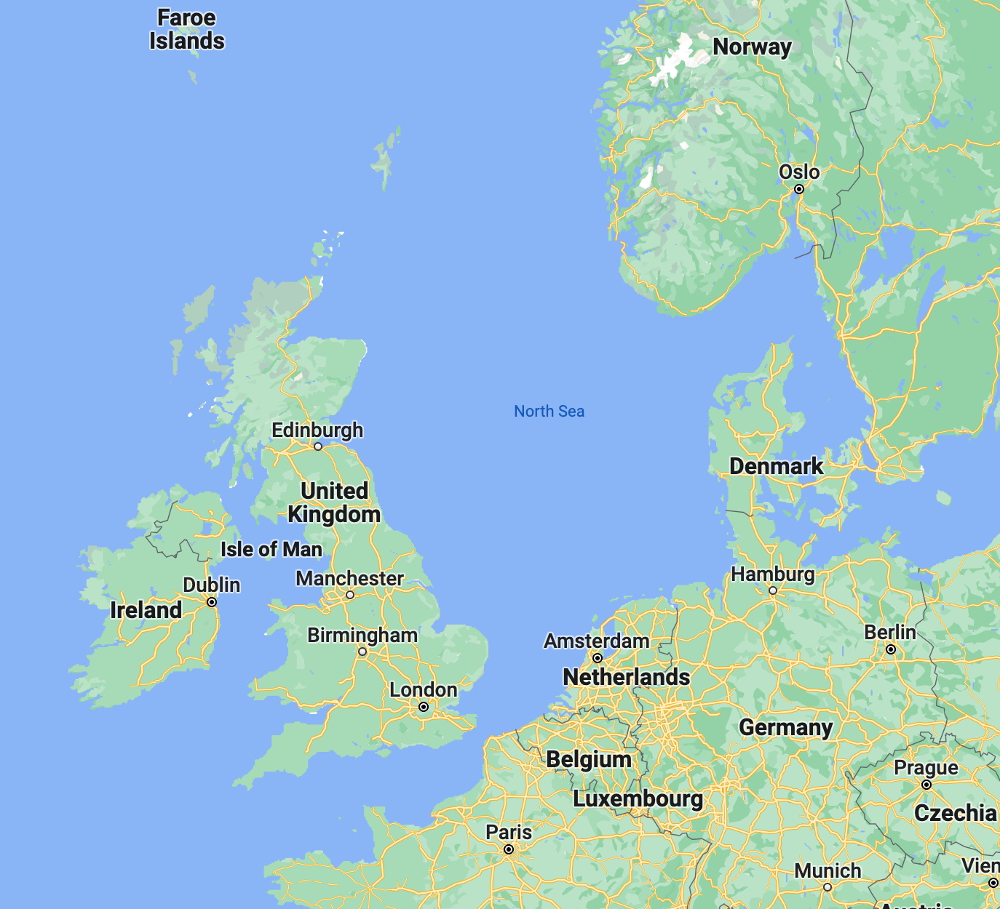

Shetland islands, scotlandon a narrow isthmus connecting two of the United Kingdom’s northern isles of Shetland, a miserable-looking bird sits hunched on the sand, ignoring people walking by. It’s a new sign of trouble that only recently arrived. The young gull’s gray and white speckled feathers get blown by the wind, and it makes no attempt to shift to a more comfortable position. With exhausted blinks, it dips and droops its beak toward the sand. This great black-backed gull would have grown up to be one the biggest of all the gulls, growing its adult-size wingspan to over five and a half feet. But it will never again soar above the North Atlantic. The same goes for the dozens of gannets lying along this beach, and uncounted corpses across the archipelago. There’s no mistaking them for sleeping birds. They lie like fallen angels might, head flung back, wings splayed, one blueberry eye staring skyward.
Seabird populations that are now being slashed by bird flu are already at risk from a great many other threats. More than half of all seabird species are thought to be in decline, with combined threats of climate change, overfishing of their prey, by-catch in fisheries, and non-native mammalian predators eating their eggs and chicks, such as rats and cats. (Read how we can help seabirds survive a warming world.) As well as being sentinels of ocean health, seabirds also play vital roles in ecosystems on sea and land. They move essential nutrients in their feces, and as top ocean predators, many seabird species help regulate the rest of the food web.